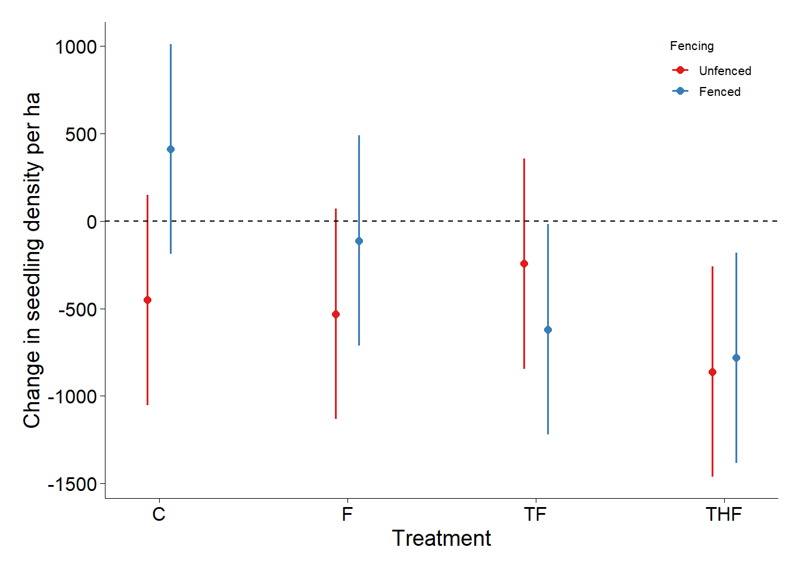
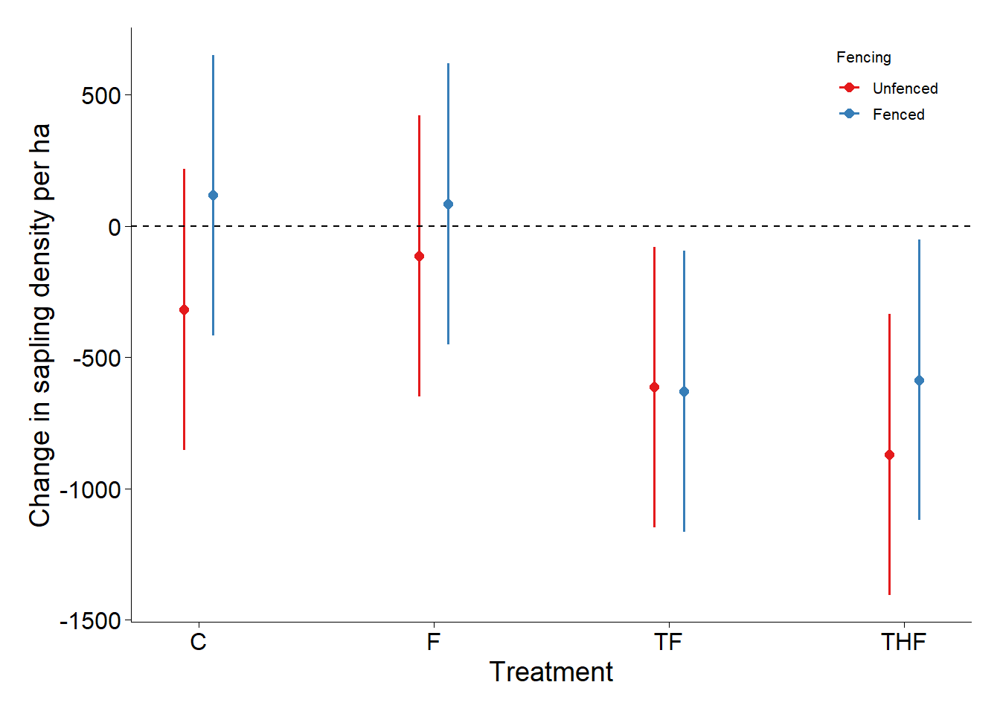
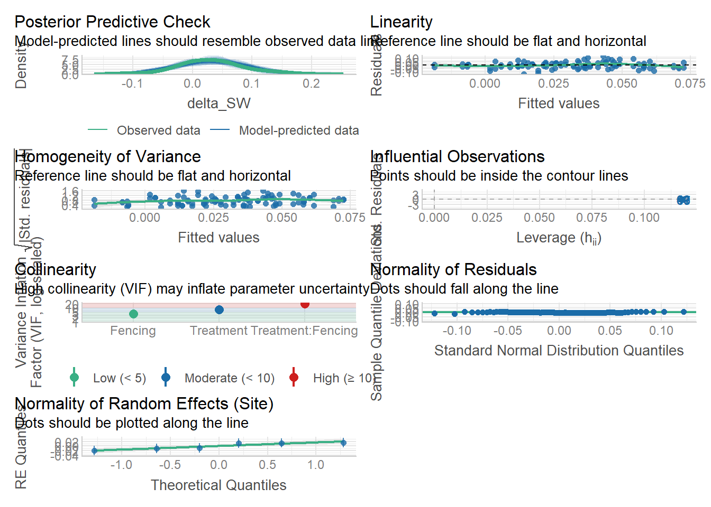

Discuss preliminary results - the discrepancies between LMM results and post-hoc analysis
Title: Managing bush encroachment on a holistically managed rangeland in a semi-arid savanna
Research objectives:
i. To determine the efficacy of selected bush encroachment management strategies including woody plant thinning, targeted herbicide application, browsers (goats), and prescribed fire, on seedling density, sapling recruitment, and resprouting dynamics.
ii. To evaluate the effects of bush encroachment management strategies on above-ground grass biomass, grass species richness, and diversity at encroached sites.
Research hypotheses
a) Combining woody plant thinning, prescribed fire, and goat browsing (TFB) will result in a substantial reduction in seedling and sapling densities. The impact of these combined management strategies is expected to be more pronounced in unfenced plots.
b) Integrating woody plant thinning, targeted herbicide application, and prescribed fire (THF) on cut stumps would result in a substantial reduction in resprouts, and the decrease will be consistent across fenced and unfenced rangelands.
c) The above-ground grass biomass will increase across all treatments where tree thinning is done (due to increased light penetration and water availability (Ludwig et al., 2004b). However, integrating woody plant thinning, prescribed fire, and targeted herbicide application (THF) will substantially increase grass above-ground biomass, with fenced plots experiencing a significant increase.
d) Grass species richness is expected to increase in treatments where woody plants are thinned, as some grass species may have been excluded from the closed canopies. Although grass species richness and Shannon-Weiner index will significantly increase in the THF treatment, this increase will be more pronounced in across unfenced plots.
Data structure
str(strt_comparison2)
$ Site : chr [1:188] "A" "A" "A" "A" ...
$ Plot : num [1:188] 1 1 1 1 1 1 1 1 2 2 ...
$ Subplot : chr [1:188] "Z1" "Z1" "Z2" "Z2" ...
$ Treatment : Factor w/ 5 levels "C", "F", "TF", "TFB", "THF"
$ Fencing : Factor w/ 2 levels "Fenced", "Unfenced"
$ Year : num [1:188] 2024 2025 2024 2025 2024 ...
$ Seedlings : int [1:188] 44 50 66 119 32 42 100 58 65 83 ...
$ density_ha: num [1:188] 733 833 1100 1983 533 ...
$ Period : Factor w/ 2 levels "Pre-treatment","Post-Treatment"
Response variable - Change in seedling density
Fixed effects - Treatment, Fencing
Random effects - Site, Plot
PRELIMINARY RESULTS
a) Test efficacy of treatment and fencing on seedling density
Code
library(tidyverse)library(vegan)library(multcompView)library(patchwork)library(lmerTest)library(Matrix)library(lme4)library(emmeans)library(here) ## MOST IMPORTANT NOT TO FORGET THIS ONE in quartolibrary(robustbase)library(sjPlot)library(flextable)library(officer)library(glmmTMB)library(DHARMa) # model diagnostics GLMMlibrary(performance) # model diagnosticslibrary(car)library(openxlsx)library(broom.mixed) #convert model objects to data frameslibrary(corrplot)library(robustlmm) # for robust regression analysislibrary(boot) # For bootsrappinglibrary(DescTools)library(effectsize) # For easy centeringlibrary(marginaleffects)library(effects)library(ggeffects)theme_beautiful <-function() {theme_bw() +theme(text =element_text(family ="Helvetica"),axis.text =element_text(size =8, color ="black"),axis.title =element_text(size =8, color ="black"),axis.line.x =element_line(size =0.3, color ="black"),axis.line.y =element_line(size =0.3, color ="black"),axis.ticks =element_line(size =0.3, color ="black"),panel.border =element_blank(),panel.grid.major.x =element_blank(),panel.grid.minor.x =element_blank(),panel.grid.minor.y =element_blank(),panel.grid.major.y =element_blank(),plot.margin =unit(c(0.5, 0.5, 0.5, 0.5), units = , "cm"),plot.title =element_text(size =8,vjust =1,hjust =0.5,color ="black" ),legend.text =element_text(size =8, color ="black"),legend.title =element_text(size =8, color ="black"),legend.position =c(0.9, 0.9),legend.key.size =unit(0.9, "line"),legend.background =element_rect(color ="black",fill ="transparent",size =2,linetype ="blank" ) )}## LOAD DATASapF <-read_csv(here("DATA/March2025/WoodyPC4.csv"))## create seedling, sapling, trees and cut-stump rowSapF <- SapF %>%mutate(woody_cat =case_when(Woody_class =="Cut stump"~"Cut stump",between(`Max_height(m)`, 0.05, 0.50)~"Seedlings",between(`Max_height(m)`, 0.51, 1.49)~"Saplings",between(`Max_height(m)`, 1.5, 21.0) ~"Trees",TRUE~NA_character_),Treatment =factor(Treatment),Fencing =factor(Fencing))#Filter SEEDLINGS Seedlings <- SapF %>%filter(woody_cat =="Seedlings", Year %in%c(2024, 2025),!Treatment %in%c("TFB")) %>%count(Site, Plot, Subplot, Treatment, Fencing,Year, name ="Seedlings") %>%mutate(density_ha = Seedlings *10000/600) # convert to ha⁻¹#comparing at treatment levelSeed_treat <- Seedlings %>%group_by(Site, Plot, Subplot, Treatment, Fencing, Year) %>%summarise(mean_dens_ha =mean(density_ha), .groups ="drop") #sort pre and post treatmentstrt_comparison2 <- Seedlings %>%filter(Year %in%c(2024, 2025)) %>%mutate(Period =ifelse(Year ==2024, "Pre-treatment", "Post-treatment"))#reorder so that pre-treatment appears first then post treatment second on the plotsstrt_comparison2 <- strt_comparison2 %>%mutate(Period =factor(Period, levels =c("Pre-treatment", "Post-treatment")))##Pivot the two years side‑by‑side and compute Δ seedling densitySeedlings_Delta <- Seed_treat %>%pivot_wider(names_from = Year,values_from = mean_dens_ha,names_glue ="dens_{Year}") %>%mutate(delta_Seeddens = dens_2025 - dens_2024) #GLMM to test effect of treatment * fencing on seedling density#################### Make "Unfenced" the reference level class(Seedlings_Delta$Fencing) # Likely "character" or "ordered factor"
[1] "factor"
Code
# Convert to unordered factor explicitlySeedlings_Delta$Fencing <-factor(Seedlings_Delta$Fencing, ordered =FALSE)# Verifylevels(Seedlings_Delta$Fencing) # Should show "Open" "Closed" (or vice versa)
[1] "Fenced" "Unfenced"
Code
# Set "Unfenced" as the reference level Seedlings_Delta$Fencing <-relevel(Seedlings_Delta$Fencing, ref ="Unfenced")# Site and plot as (crossed) random effectsSeedl3 <-glmmTMB(delta_Seeddens ~ Treatment * Fencing + (1|Site), data = Seedlings_Delta)# check if model converged#performance::check_convergence(Seedl3) # TRUE the model converged# MODEL performance#performance::check_model(Seedl3)# Shapiro-Wilk Test for Normal distribution of residuals#shapiro.test(resid(Seedl3)) #p < 0.05 → residuals are non-normal.# result p = 0.7431, hence residuals are normal. We have sufficient evidence to conclude that the sample data comes from a population that is normally distributed## create a Q-Q plot of your residuals: #qqnorm(resid(Seedl3)) #qqline(resid(Seedl3))##B. Levene’s Test for Homoscedasticity# Bin fitted values into 3-5 groups#fitted_binned <- cut(fitted(Seedl3), breaks = 5)#leveneTest(resid(Seedl3) ~ fitted_binned) # p < 0.05 → unequal variance (heteroscedasticity)# results p = 0.918 equal variance # Assumption on Homoscedasticity# check homoscedasticity by creating a fitted value vs. residual plot. The scatterplot should show the fitted values of the model vs. the residuals of those fitted values.# Line should be flat and horizontal if the homoscedasticity assumption is met.#Dealing with heteroscedasticity (unequal variance) - log transforming the response variable, weighted regression (assigning weights to each data point based on the variance of its fitted value).# results of the model#summary(Seedl3)
Seedl4 <- lmer(delta_Seeddens ~ Treatment * Fencing + (1|Site/Plot),
data = Seedlings_Delta) ## did not converge
Seed5 <- lmer(delta_Seeddens ~ Treatment * Fencing + (1|Site)+ (1|Plot), data = Seedlings_Delta1) ## did not converge
Fencing = Unfenced:
contrast estimate SE df z.ratio p.value
C - F 79.2 359 Inf 0.220 0.9962
C - TF -206.9 359 Inf -0.576 0.9392
C - THF 409.7 359 Inf 1.141 0.6640
F - TF -286.1 359 Inf -0.797 0.8559
F - THF 330.6 359 Inf 0.921 0.7938
TF - THF 616.7 359 Inf 1.718 0.3144
Fencing = Fenced:
contrast estimate SE df z.ratio p.value
C - F 523.6 359 Inf 1.458 0.4629
C - TF 1030.6 359 Inf 2.870 0.0214
C - THF 1193.1 359 Inf 3.323 0.0049
F - TF 506.9 359 Inf 1.412 0.4918
F - THF 669.4 359 Inf 1.865 0.2434
TF - THF 162.5 359 Inf 0.453 0.9691
P value adjustment: tukey method for comparing a family of 4 estimates
Visualising results
Code
### Marginal effects for treatment * fencing on seedlingsSeeden <-ggpredict(Seedl3, terms =c("Treatment", "Fencing"))plot(Seeden) +#Store the plot in an object for saving labs(y ="Change in seedling density per ha",x ="Treatment") +theme_beautiful()+ggtitle(NULL)+geom_hline(yintercept =0, linetype ="dashed", color ="black", linewidth =0.5)+theme(axis.title =element_text(size =14), # Axis titlesaxis.text =element_text(size =12) # Axis tick labels )

Figure 1. Seedling density substantially reduced by TF in fenced plots at SHR five months post treatment.
Interpretation of Results
TF and fencing were associated with a significant reduction in seedling density (p = 0.0147). Treatment TF and fencing were highly effective at reducing the seedling proliferation.
Post-hoc analysis reveal that THF and TF treatments in fenced plots significantly reduced seedling density when compared to the the baseline (p < 0.05).
b) Test efficacy of treatment and fencing on sapling density
Code
#Filter SAPLINGS Saplings <- SapF %>%filter(woody_cat =="Saplings", Year %in%c(2024, 2025),!Treatment %in%c("TFB")) %>%count(Site, Plot, Subplot, Treatment, Fencing,Year, name ="Saplings") %>%mutate(density_ha = Saplings *10000/600) # convert to ha⁻¹#comparing at treatment levelSap_treat <- Saplings %>%group_by(Site, Plot, Subplot, Treatment, Fencing, Year) %>%summarise(mean_dens_ha =mean(density_ha), .groups ="drop") #Summary stats for saplings Saplsummary_stats <- Saplings %>%group_by(Treatment, Year) %>%summarise(N =n(), # number of observations per treatmentmean_density =mean(density_ha, na.rm =TRUE),sd_density =sd(density_ha, na.rm =TRUE) ) %>%ungroup()#sort pre and post treatmentsptrt_comparison2 <- Saplings %>%filter(Year %in%c(2024, 2025)) %>%mutate(Period =ifelse(Year ==2024, "Pre-treatment", "Post-treatment"))##reorder so that pre-treatment appears first then post treatment second on the plotssptrt_comparison2 <- sptrt_comparison2 %>%mutate(Period =factor(Period, levels =c("Pre-treatment", "Post-treatment")))#Pivot the two years side‑by‑side and compute Δ sapling densitySaplings_Delta <- Sap_treat %>%pivot_wider(names_from = Year,values_from = mean_dens_ha,names_glue ="dens_{Year}") %>%mutate(delta_Sapsdens = dens_2025 - dens_2024) # Make "Unfenced" the reference level class(Saplings_Delta$Fencing) # Likely "character" or "ordered factor"
[1] "factor"
Code
# Convert to unordered factor explicitlySaplings_Delta$Fencing <-factor(Saplings_Delta$Fencing, ordered =FALSE)# Verifylevels(Saplings_Delta$Fencing) # Should show "Open" "Closed" (or vice versa)
[1] "Fenced" "Unfenced"
Code
# Set "Fenced" as the reference level Saplings_Delta$Fencing <-relevel(Saplings_Delta$Fencing, ref ="Unfenced")#### Convert character variables to factorsSaplings_Delta$Treatment <-as.factor(Saplings_Delta$Treatment)Saplings_Delta$Fencing <-as.factor(Saplings_Delta$Fencing)# LMM for saplingSapl5 <-lmer(delta_Sapsdens ~ Treatment * Fencing + (1|Site), data = Saplings_Delta)summary(Sapl5)
Fencing = Unfenced:
contrast estimate SE df t.ratio p.value
C - F -204.2 214 83 -0.952 0.7768
C - TF 295.8 214 83 1.380 0.5156
C - THF 552.8 214 83 2.578 0.0557
F - TF 500.0 214 83 2.332 0.0991
F - THF 756.9 214 83 3.530 0.0037
TF - THF 256.9 214 83 1.198 0.6297
Fencing = Fenced:
contrast estimate SE df t.ratio p.value
C - F 31.9 214 83 0.149 0.9988
C - TF 745.8 214 83 3.478 0.0044
C - THF 702.8 214 83 3.277 0.0082
F - TF 713.9 214 83 3.329 0.0070
F - THF 670.8 214 83 3.128 0.0127
TF - THF -43.1 214 83 -0.201 0.9971
Degrees-of-freedom method: kenward-roger
P value adjustment: tukey method for comparing a family of 4 estimates
Visualising results
Code
#marginal effectsSapden <-ggpredict(Sapl5, terms =c("Treatment", "Fencing"))plot(Sapden) +labs(y ="Change in sapling density per ha",x ="Treatment") +theme_beautiful()+ggtitle(NULL)+theme(axis.title =element_text(size =14), # Axis titlesaxis.text =element_text(size =12) # Axis tick labels )+geom_hline(yintercept =0, linetype ="dashed", color ="black", linewidth =0.5)

Figure 2. Sapling density substantially reduced by THF in unfenced plots at SHR five months post treatment.
Results interpretation
LMM analysis reveal that THF substantially reduced sapling density in unfenced plots (p < 0.05) similarly the post-hoc analysis show that THF in unfenced plots significantly reduced sapling density (p < 0.05). Furthermore, the post-hoc analysis reveal that TF and THF in fenced plots strongly reduced sapling density (p < 0.05).
c) Test efficacy of treatment and fencing on grass Shannon-Weiner index
Code
#load dataGrasses <-read_csv(here("DATA/March2025/GrassesCombinedCleaned3.csv"))# Calculate Shannon-Wiener Diversity Index at Site and Plot levelGrSWeiner <- Grasses%>%filter(!is.na(Species_name), Year %in%c(2024, 2025),!Treatment %in%c("TFB"))%>%# keep only pre/post yearsgroup_by(Site, Plot, Subplot, Treatment, Year, Fencing, Species_name)%>%summarise(Spp_count =n(), .groups ="drop" )## Calculate Shannon-Wiener Diversity Index at Site and Plot levelgrSWdiversity <- GrSWeiner %>%group_by(Site, Plot, Subplot,Treatment, Year, Fencing) %>%# Group by Site and Plotsummarise(Shannon_Diversity =-sum((Spp_count /sum(Spp_count)) * (Spp_count /sum(Spp_count))),.groups ="drop")%>%mutate(Period =ifelse(Year ==2024, "Pre-treatment", "Post-treatment"))##reorder so that pre-treatment appears first then post treatment second on the plotsgrSWdiversity <- grSWdiversity %>%mutate(Period =factor(Period, levels =c("Pre-treatment", "Post-treatment")))###### DELTA SHANNON-WEINER DIVERSITY INDEXGdiv <- Grasses%>%filter(!is.na(Species_name), Year %in%c(2024, 2025), !Treatment %in%c("TFB"))%>%# keep only pre/post yearsgroup_by(Site, Plot, Subplot, Treatment, Year, Fencing, Species_name)%>%summarise(Spp_count =n(), .groups ="drop" )# Calculate Shannon-Wiener Diversity Index log transformingSdiversity_data <- Gdiv %>%group_by(Site, Plot, Subplot,Treatment, Year, Fencing) %>%# Group by Site and Plotsummarise(Shannon_Diversity =-sum((Spp_count /sum(Spp_count)) * (Spp_count /sum(Spp_count))),.groups ="drop" )# Pivot the two years side‑by‑side and compute Δ‑ grass Shannon-Weiner diversitySW_Delta <- Sdiversity_data %>%pivot_wider(names_from = Year,values_from = Shannon_Diversity,names_glue ="sw_{Year}") %>%mutate(delta_SW = sw_2025 - sw_2024) ### Convert character variables to factorsSW_Delta$Treatment <-as.factor(SW_Delta$Treatment)SW_Delta$Fencing <-as.factor(SW_Delta$Fencing)# Make "Unfenced" the reference level class(SW_Delta$Fencing) # Likely "character" or "ordered factor"
[1] "factor"
Code
# Convert to unordered factor explicitlySW_Delta$Fencing <-factor(SW_Delta$Fencing, ordered =FALSE)# Verifylevels(SW_Delta$Fencing) # Should show "Open" "Closed" (or vice versa)
[1] "Fenced" "Unfenced"
Code
# Set "Fenced" as the reference level SW_Delta$Fencing <-relevel(SW_Delta$Fencing, ref ="Unfenced")### Convert character variables to factorsSW_Delta$Treatment <-as.factor(SW_Delta$Treatment)SW_Delta$Fencing <-as.factor(SW_Delta$Fencing)#LMMGrasD <-lmer(delta_SW ~ Treatment * Fencing + (1|Site), data = SW_Delta)#check if model convergedperformance::check_convergence(GrasD) # TRUE the model converged
[1] TRUE
attr(,"gradient")
[1] 9.457434e-09
Code
# check model performanceperformance::check_model(GrasD)

Figure 3. Grass Shannon-Weiner diversity substantially reduced by THF in unfenced plots at SHR five months post treatment.
Code
# results of the model: change in seedling density summary(GrasD)
Figure 3. Grass Shannon-Weiner diversity index was not affected by treatment and fencing at SHR five months post treatment.
Results interpretation
Treatment and fencing (F, TF, THF) did not significantly impact grass Shannon-Weiner diversity index (p > 0.05) . the Control in unfenced plots had a strong positive effect (p <0.05).
Post-hoc analysis show no significant difference for all the treatments when compared to the control (p > 0.05).